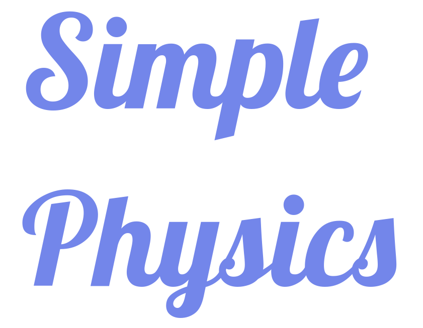

Home¶
Contents
Simple Physics is a project that documents the programming language of the universe
Motivation¶
After being a physics undergraduate for 3 years, I am deeply troubled by the following problems:
- When I try to apply the physics I learned to real projects, I often realize that I don’t really understand them, although I thought I did. I need to re-learn everything again, this is not efficient!
- Most textbooks are full of words… and I hate words… I want everything to be as simple as possible, straight to the point.
- I love the w3cschools , I really think they redefined learning. their approach are efficient and simple, I would like to make learning physics just like that.
Therefore, the knowledge in “Simple Physics” project will be structured as:
Knowledge Structure¶
- Dependency: the knowledge that this segment of knowledge depends on.
- What ?: What is the question we want to answer?
- Derivation: recommanded to be done with SymPy
- Code: recommanded to be done with Python
- Example: recommanded to be done with Code above.
- So ?: significance of this knowledge.
- Who ? Who developed the theory, or reference to paper.
Contribute¶
This project is actively maintained by Ding Ruiqi , a 4th year undergraduate from National University of Singapore.
中文版¶
物理 是宇宙的 编程语言
动机¶
在成为一名物理本科生3年后，我对以下问题深感不安：
- 当我尝试将我学到的物理应用到实际项目中时，我经常意识到我并不是 真的 理解他们，虽然我以为我做到了。我需要重新学习一切，这没有 效率 ！
- 大多数教科书都充满了文字…我讨厌文字…我希望一切尽可能 简单 ，开门见山。
- 我喜欢 w3cschools ，我真的认为他们重新定义了 学习 。他们的方法 高效 而 简单 ，我也想这样学习物理。
因此，“简单物理”项目的知识结构如下：
贡献¶
该项目由新加坡国立大学的大四学生 Ding Ruiqi 活跃维持。
- Math
- Relativity
- Quantum Mechanics: Feynman Path Integral
- Quantum Computation
- Quantum Optics
- Density Functional Theory
- Thermodynamics And Statistical Mechanics
- Biomolecular Physics
- Papers: Quantum Computers
- Experimental Physics: SoC FPGA Design
- Design Plan
- Linux Tips
- Processor-FPGA Communication: FPGA Part
- Processor-FPGA Communication: Processor Part
- FAILED Processor-FPGA Communication: Using FIFO FPGA Part
- FAILED Processor-FPGA Communication: Using FIFO Processor Part
- Processor-FPGA Communication: Using FIFO FPGA Part
- Processor-FPGA Communication: Using FIFO Processor Part
- Nodejs Talking To C Executable 1
- Nodejs Talking To C Executable 2
- Nodejs RESTful API
- Verilog DataSender
- Django